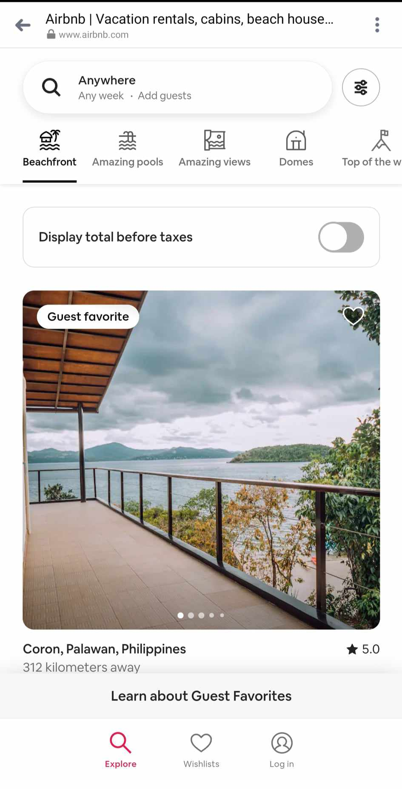
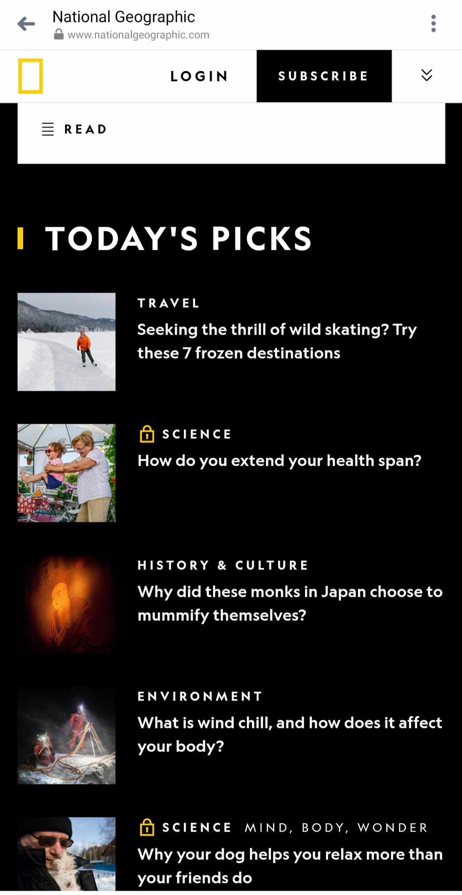

Visual Hierarchy
Airbnb
Website Airbnb effectively uses visual hierarchy to guide users' attention. The large, high-contrast search bar takes prominence, drawing users to the most critical action—searching for accommodations. The use of bold imagery and clear call-to-action buttons contributes to a visually engaging and well-organized hierarchy.
Rule of Thirds
National Geographic
https://fonts.googleapis.com/css2?family=Roboto:wght@400;700&family=Lora:wght@400;700&display=swap Website National Geographic's website often applies the Rule of Thirds in its photography and layout. Images are carefully composed, with focal points aligned along the imaginary lines and intersections created by dividing the frame into thirds. This technique enhances the visual appeal and storytelling impact of the photographs.
Repetition
GitHub
WebsiteGitHub employs the principle of Repetition by maintaining consistent design elements throughout its interface. The repetition of styles for repositories, buttons, icons, and navigation elements creates a cohesive and familiar user experience. This design consistency contributes to user understanding and usability.